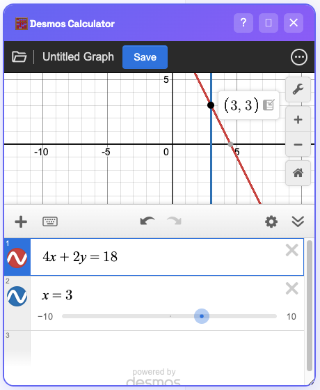

Poly-Solve Variables
Solve for k when you know x.
⚡ The "Variables to y" Trick
The Golden Rule: Desmos loves x and y. It gets a bit confused by other letters like k, m, or a.
💡 Pro Tip: If you see a mystery variable like \(k\), simply call it \(y\) instead. This lets Desmos see it as a line so you can find the answer!
📝 SAT Problem
If \(4x + 2k = 18\) and \(x = 3\), what is the value of \(k\)?
Step 1: FORCE 'y' into the equation
You CANNOT type 4x + 2k. It won't work because Desmos only wants to use
x and y.
You MUST type 4x + 2y = 18.
Step 2: Type the known value
Type x = 3 on the next line.
Step 3: Click the Dot
Find the intersection point. The y-coordinate is your answer.
The intersection is at (3, 3). Since we swapped k for y, this means:
y = 3 ➝ k = 3
✅ Final Answer:
3 (Choice B)